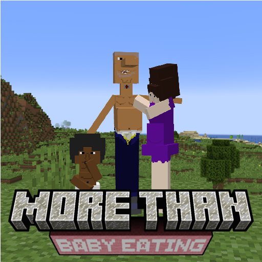
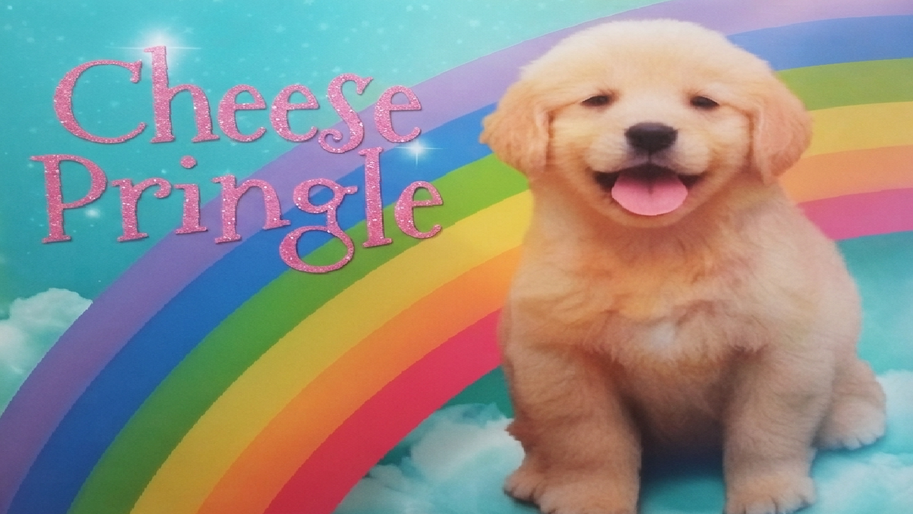
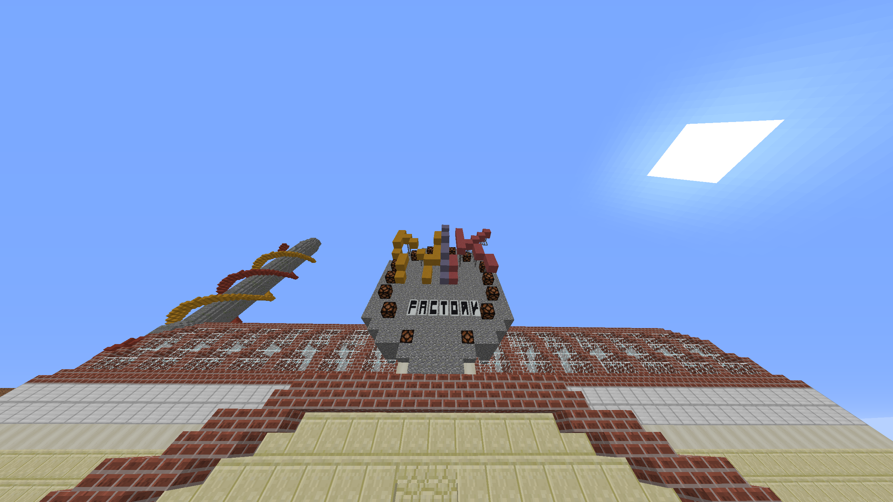

You will need Minecraft Forge 1.12.2 to play this mod. I do not plan to port it forward in the near future, but it's a possibility.
Get Forge for 1.12.2 at this official link here, or use the CurseForge App (ew).
Get Forge for 1.12.2 at this official link here, or use the CurseForge App (ew).

THE MOD HAS CUSTOM PAINTINGS YOOOOOOO
This mod is just random and stupid, but has a bit of lore and progression to it. With the Mexican, African, and Chinese dimensions, there's plenty to explore from completely custom villages, to even new bosses.
